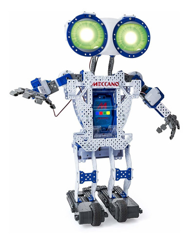

Robot controlado remotamente con transmisón WebCam en tiempo real
Detalles sobre el transmisor M-JPEG y Meccanoid
Robot Meccanoid
Este robot puede grabar y reproducir animaciones, procesar el reconocimiento de voz y comunicarse con dispositivos inteligentes a través de Bluetooth.
La razón para desarrollar este software fue la necesidad de una aplicación de transmisión simple y amigable con los recursos para cámaras web compatibles con Linux-UVC. El predecesor uvc-streamer funciona bien, pero quería implementar algunas ideas más. Por ejemplo, se pueden usar complementos. para procesar las imágenes. Un complemento de entrada copia las imágenes en una variable global, múltiples complementos de salida pueden acceder a esas imágenes. Por ejemplo, esta página web es atendida por el complemento output_http.so
La imagen que se muestra aquí fue capturada por el complemento de entrada. La solicitud HTTP contiene los parámetros GET action=snapshot. Esto solicita una sola imagen de la entrada de imagen. Para mostrar otro ejemplo, simplemente haga clic en la imagen.
Más ejemplos
Para ver la transmisión con cualquier navegador, puede probar las subpáginas javascript o Java. Firefox puede mostrar la transmisión M-JPEG directamente